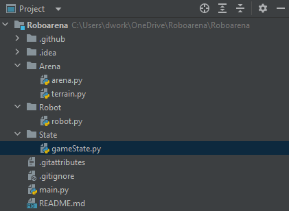
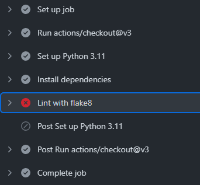
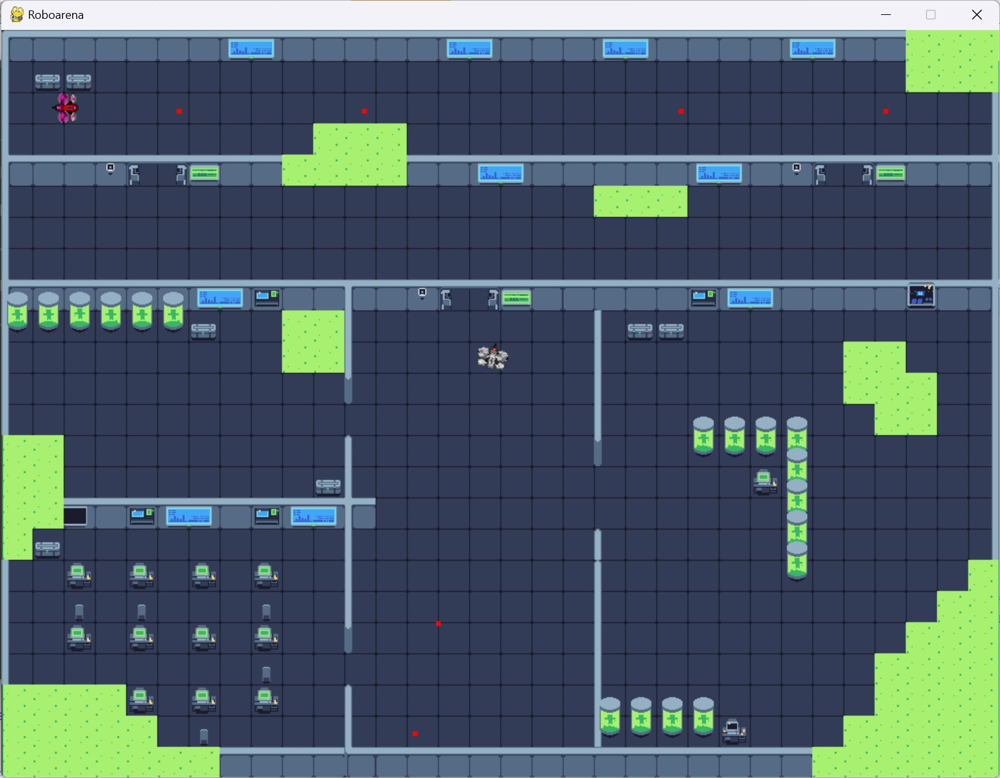

Update Log
This is our update log in chronological order. To see the newest changes, go to bottom.First Sprint: 02.10.23 - 15.10.23
Very First Actions
In the first meeting, we settled the following things:
- The game will be implemented with the PyGame library.
- We will probably meet every other monday for sprint reviews and distributing new tasks.
- We created the project organizazion and the project repository on GitHub.
Beginning with the Basic Setup
We talked online, started brainstorming about what the game's genre and idea could be. Then, we distributed the tasks of the first sprint among ourselves.
- Set up this update log website
- Create an online collaboration document for brainstorming
- Create a simple game code in the repository
- Set up Continuous Integration using GitHub Actions:
A Flake8 test is automatically run on every pull request.

- Create basic game code:
- Draw a basic field with a movable character

- Avoid the player going out of the screen: The edges of the window are borders.

- Make the player movement smooth: You can hold keys to keep going, and you can go diagonally by
holding two keys at once.

- Draw a basic field with a movable character
Second Sprint: 16.10.23 - 29.10.23
We implemented new features (BasicRobot and Arena)
- BasicRobot with position and direction attributes
- New Arena and terrain class

Added Game State Class
Added the class GameState to handle the states of the world and movement.
- The structure of our current project:

Gamedesign
We met in the library and talked about how we wanted to design our game.
- That is how the different windows could be handled:

- And this is our UML structure and some future features:

Update workflow
All Flake8 warnings and style violations are now treated as errors and prohibit merging into the main branch.
- Changed the workflow

Third Sprint: 30.10.23 - 12.11.23
Added a main menu and made the screen smaller
A very basic main menu has been added, and the screen size has been reduced from 1000 x 1000 px to 750 x 650 px.
- Created a very basic main menu to start the game and exit the program.
The game can be exited to the main menu using the Escape key.
- Changed the size of the window so it fits on all our screens.
The former size of 1000 x 1000 px was too high to fit on regular laptop screens.
Load the arena from an ASCII file with some graphical tiles
- Load the arena from an ASCII text file
- Draw the arena with graphical tiles
Created four robots that can all move
- Four different robots are spawned on the field. You can select one with the number keys 1 to 4,
and the currently selected robot can be moved and rotated using the arrow keys and mouse cursor.
Load the arena with graphical tiles from TMX files
- The arena is now loaded from TMX files instead, allowing for easily creating multiple layers, walls, and as many different kinds of tiles as desired.
- The robots are also drawn using graphical tiles now.

- A level selection screen has been added that dynamically shows buttons for levels.
Any existing level can be loaded from TMX files.
- Robots have acceleration, velocity and max velocity both for normal movement and rotation.
Fourth Sprint: 13.11.23 - 10.12.23
Code Structure updated: Classes and Inheritance
- Major Refactoring to put code in according classes and add the following inheritance structure:
An Entity is anything that can move in the arena.
An Actor is an active entity, that is a Robot (playable) or an Enemy. There can be other, passive Entities such as bullets.
A BasicRobot is an Actor.
This inheritance allows to easily draw, move, kill, etc. all kinds of entities without code duplication.
Two controllable players saved in the arena map
- Start to implement multiplayer capabilities:
The number of players was reduced to two, they are independently controllable: One with WASD and one with the arrow keys. It is no longer possible to select one active robot. - The starting positions for the two robots are stored per arena in the map TMX file.
Bullets and a beautiful main menu
- Added the ability for robots to shoot bullets, including the new bullet class.
 - Added background music for the menus and the game.
- Made the main menu and level selection screens beautiful with graphical backgrounds, buttons
and hover and click effects.

Basic collision detection and health bars for robots
- Added basic collision detection (not working perfectly so far): Entities can no longer pass through walls.
They can die when touching acid and can revive each other. If both die, a Game Over screen is shown.
- Added health bars and calculation of HP. Touching acid will reduce the HP of a robot until it dies.
Installation instructions and Player selection screen
- A requirements.txt file was added along with friendly installation instructions in the README file.
- A player selection screen was added (you can scroll through the sprites, but they are not
actually used in the game yet).
Improved collision detection, proper 2.5D style, refactorings
- Collision detection has been fixed to work with entities' actual hitboxes.
The arena walls don't all occupy an entire tile anymore, but only the part where a wall is actually drawn.
Wall layers are drawn above entities, so entities can visually disappear behind walls (2.5D-effect).
Entities can slide along walls instead of getting stuck instantly when touching a wall.
Implementing enemies - Decoding
- Enemy positions are decoded from the level files and the enemies are displayed in the arena.
They don't do anything yet.
Implementing enemies - Make them active
- Enemies can move, shoot and target a player. They can do damage to players and
take damage from shots.

Fifth Sprint: 11.12.23 - 14.01.24
Investor meeting
We had a meeting with a hypothetical future investor for our game and tried to sell it as the newest Triple-A-title that will make us millions!
Here are our presentation slides! :) (They are in German)
Implementing enemies - More natural movement
- Enemies target the player closest to them, health points and damage are
calculated in a unified way for all Actors (Robots and Enemies).

Sound effects
- Added sound effects for shooting, dying, winning and losing.
Improvements to the game appearence
- Added a texture for bullets instead of the red squares
- We were using two seperate libraries for dealing with TMX files - move all uses of the tmx library to instead use the PyTmx library, to get rid of one dependency.
- Fixed and enabled the buttons for the game end (game over and victory) panels.
Added Credits
- Added a credits section to the main menu, with clickable buttons to open relevant websites.